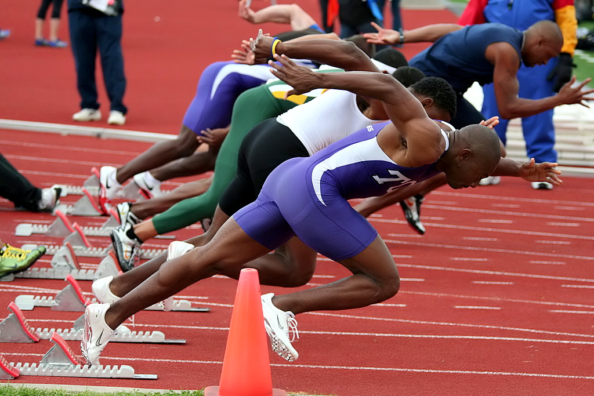

¿En que consiste?
Es un deporte que contiene un conjunto de disciplinas agrupadas
en carreras, saltos, lanzamientos, pruebas combinadas y marcha.
Es el arte de superar el rendimiento de los adversarios en velocidad
o en resistencia, en distancia o en altura.
El número de pruebas, individuales o en equipo, ha variado con el tiempo
y las mentalidades. El atletismo es uno de los pocos
deportes practicado universalmente, ya sea en el mundo aficionado o
en muchas competiciones a todos los niveles.
La naturalidad y los pocos medios
necesarios para su práctica explican
en parte este éxito.

¿En que he participádo?
He tendido la suerte de participar en algunas disciplinas y estas son algunas: